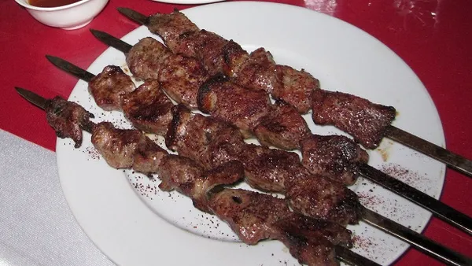

Home - All Recipes
Tikka Kabab

Food Introduction:
Tikka Kabab is a popular grilled dish made with marinated pieces of meat cooked over an open flame or grill. It is widely enjoyed across Afghanistan and is known for its smoky flavor and tender texture.
The meat is marinated in yogurt, spices, and lemon juice, which enhances its flavor and keeps it juicy during cooking. It is often served with naan, fresh vegetables, and chutney.
Ingredients:
- 500g chicken, lamb, or beef (cut into cubes)
- 1 cup yogurt
- 3 cloves garlic, minced
- 1 tablespoon lemon juice
- 1 teaspoon cumin
- 1 teaspoon paprika
- 1 teaspoon black pepper
- 1 teaspoon salt
- 2 tablespoons oil
- Skewers
Steps to Cook it:
- Cut the meat into small cubes.
- In a bowl, mix yogurt, garlic, lemon juice, spices, and salt.
- Add the meat to the marinade and mix well.
- Cover and let it marinate for at least 2 hours (or overnight).
- Thread the meat onto skewers.
- Grill over medium heat until fully cooked and slightly charred.
- Turn occasionally to cook evenly on all sides.
- Serve hot with naan, salad, and chutney.